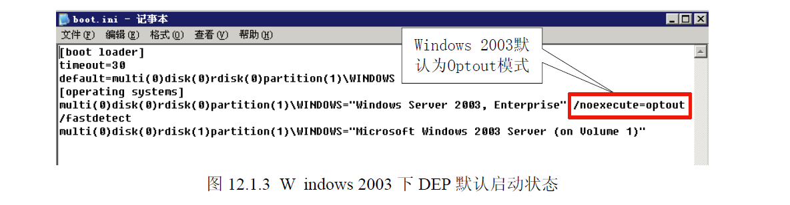

根据启动参数的不同，DEP 工作状态可以分为四种。
（1）Optin：默认仅将DEP 保护应用于Windows 系统组件和服务，对于其他程序不予保护，但用户可以通过应用程序兼容性工具(ACT，Application Compatibility Toolkit)为选定的程序启用DEP，在Vista 下边经过/NXcompat 选项编译过的程序将自动应用DEP。这种模式可以被应用程序动态关闭，它多用于普通用户版的操作系统，如Windows XP、Windows Vista、Windows7。
（2）Optout：为排除列表程序外的所有程序和服务启用DEP，用户可以手动在排除列表中指定不启用DEP 保护的程序和服务。这种模式可以被应用程序动态关闭，它多用于服务器版的操作系统，如 Windows 2003、Windows 2008。
（3）AlwaysOn：对所有进程启用DEP 的保护，不存在排序列表，在这种模式下，DEP 不可以被关闭，目前只有在64 位的操作系统上才工作在AlwaysOn 模式。
（4）AlwaysOff：对所有进程都禁用DEP，这种模式下，DEP 也不能被动态开启，这种模式一般只有在某种特定场合才使用，如DEP 干扰到程序的正常运行。我们可以通过切换图12.1.2 中的复选框切换Optin 和Optout 两种模式。还可以通过修改
c:\boot.ini 中的/noexecute 启动项的值来控制DEP 的工作模式。如图12.1.3 所示，DEP 在该操作系统上的工作模式为Optout。

介绍完DEP 的工作原理及状态后，我们来看一个和DEP 密切相关的程序链接选项：/NXCOMPAT。/NXCOMPAT 是Visual Studio 2005 及后续版本中引入一个链接选项，默认情况下是开启的。在本书中使用的Visual Studio 2008 (VS 9.0)中，可以在通过菜单中的Project→
project Properties→Configuration Properties→Linker→Advanced→Data Execution Prevention(DEP)中选择是不是使用/NXCOMPAT 编译程序，如图12.1.4 所示。
采用/NXCOMPAT 编译的程序会在文件的PE 头中设置IMAGE_DLLCHARACTERISTICS_NX_COMPAT 标识，该标识通过结构体IMAGE_OPTIONAL_HEADER 中的DllCharacteristics变量进行体现，当DllCharacteristics 设置为0x0100 表示该程序采用了/NXCOMPAT 编译。关于结构体IMAGE_OPTIONAL_HEADER 的详细说明大家可以查阅MSDN 相关资料，在这我们就不过多讨论了。经过/NXCOMPAT 编译的程序有什么好处呢？通过前面的介绍我们知道用户版的操作系统中DEP 一般工作在Optin 状态，此时DEP 只保护系统核心进程，而对于普通的程序是没有保护的。虽然用户可以通过工具自行添加，但这无形中增高了安全的门槛，所以微软推出了/NXCOMPAT 编译选项。经过/NXCOMPAT 编译的程序在Windows vista 及后续版本的操作系统上会自动启用DEP 保护。DEP 针对溢出攻击的本源，完善了内存管理机制。通过将内存页设置为不可执行状态，来阻止堆栈中shellcode 的执行，这种釜底抽薪的机制给缓冲溢出带来了前所未有的挑战。这也是迄今为止在本书中我们遇到的最有力的保护机制，它能够彻底阻止缓冲区溢出攻击么？答案是否定的。如同前面介绍的安全机制一样，DEP 也有着自身的局限性。首先，硬件DEP 需要CPU 的支持，但并不是所有的CPU 都提供了硬件DEP 的支持，在一些比较老的CPU 上边DEP 是无法发挥作用的。其次，由于兼容性的原因Windows 不能对所有进程开启DEP 保护，否则可能会出现异常。例如一些第三方的插件DLL，由于无法确认其是否支持DEP，对涉及这些DLL 的程序不敢贸然开启DEP 保护。再有就是使用ATL 7.1 或者以前版本的程序需要在数据页面上产生可以执行代码，这种情况就不能开启DEP 保护，否则程序会出现异常。再次，/NXCOMPAT 编译选项，或者是IMAGE_DLLCHARACTERISTICS_NX_COMPAT的设置，只对Windows Vista 以上的系统有效。在以前的系统上，如Windows XP SP3 等，这个设置会被忽略。也就是说，即使采用了该链接选项的程序在一些操作系统上也不会自动启用DEP 保护。
最后，当DEP 工作在最主要的两种状态Optin 和Optout 下时，DEP 是可以被动态关闭和开启的，这就说明操作系统提供了某些API 函数来控制DEP 的状态。同样很不幸的是早期的操作系统中对这些API 函数的调用没有任何限制，所有的进程都可以调用这些API 函数，这就埋下了很大的安全隐患，也为我们突破DEP 提供了一条道路。